A softer place to check in.
Luvia is the private wellness app built around kindness.
Check in with your mood, journal your gratitude, sit with a ritual, and send anonymous kind words. Your reflections stay on your device.
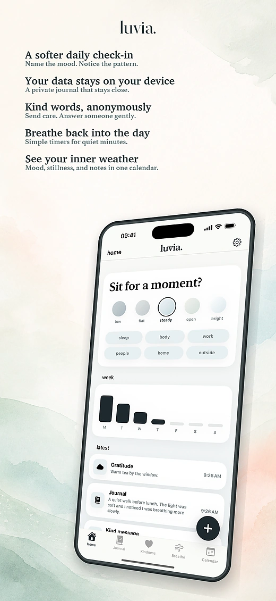
watch
See Luvia in thirty seconds.
Mood check-ins, a private journal, rituals and kind messages, in one quiet app.

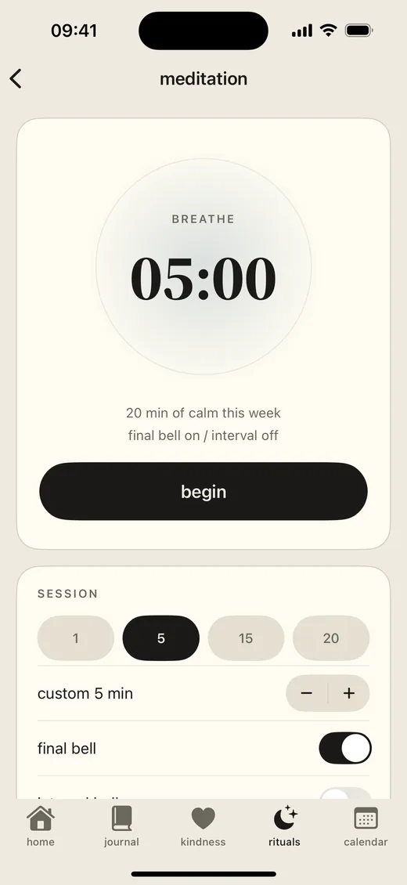
anonymous care
Kind messages, without names.
Kind Messages are supportive, anonymous notes, a safe and kind place to feel less alone. Send what you carry, or rest with someone else's note when you can.
Safety checks before sharing
Luvia checks kind messages for contact details, threats, harassment, sexual content, spam, and other unsafe material.
Keep the one that mattered
Pin a message to the day you wrote about. It rests on that journal entry, folded shut, until you open it again.
private by default
Your reflections stay on your device.
Your journal entries, gratitude notes, mood logs, meditation sessions, and local settings are stored on your device.
Local-first journaling
Write the small true thing, save a gratitude, and keep it close.
No ads, no tracking
Luvia shows no ads and never tracks you across other apps or websites. Your reflections are never used for advertising.
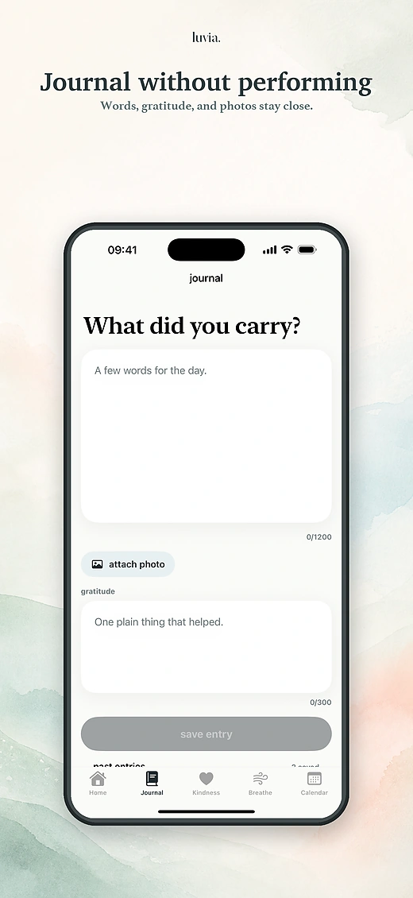
rituals
Something steady to come back to.
Rituals is the corner of Luvia for the practices you choose to do. Three of them, in one quiet place.
Meditation
Set a length and let the timer count for you, with optional bells to open and close the session.
WOOP
Wish, outcome, obstacle, plan. Four short steps that turn a vague want into one move you can actually make. Read why it works.
Note to your future self
Write today, pick a date, and let it stay sealed until then. It finds you on the morning you chose.
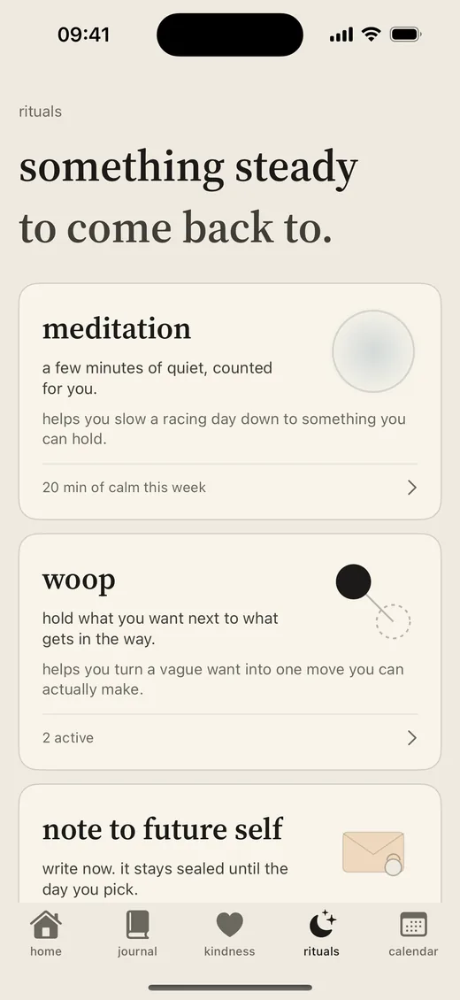
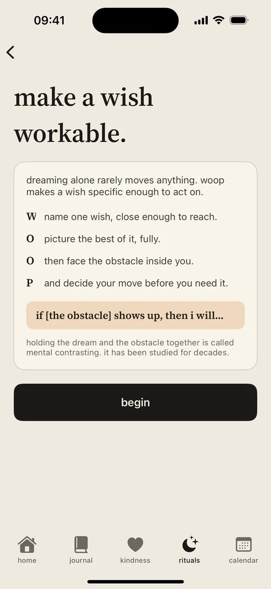
screenshots
Daily care, softly organized.
Mood, journal, gratitude, rituals, kindness, and your inner weather in one iOS app.
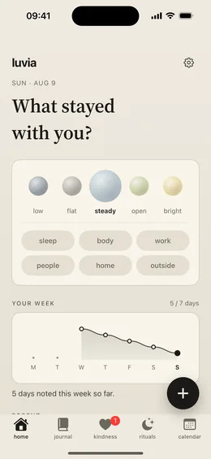
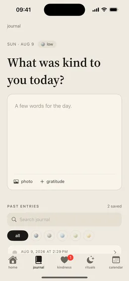
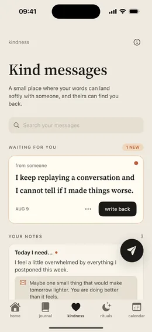
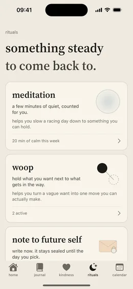
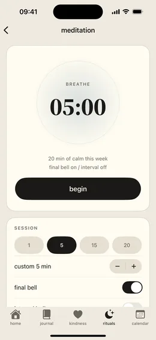
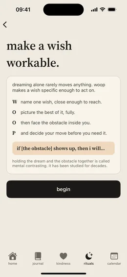
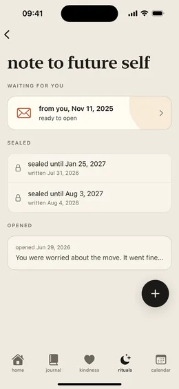
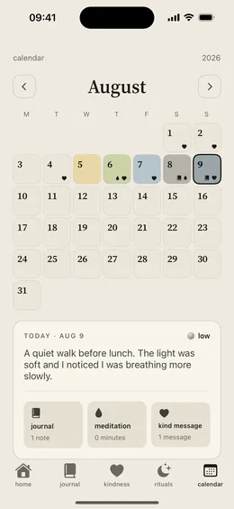
built for trust
Simple boundaries for a sensitive space.
Private reflections stay local
Luvia does not use your private journal, mood, gratitude, or meditation content for advertising.
Kindness is moderated
Anonymous messages use limited service processing so the feature can work and abuse can be prevented.
Quiet daily design
Luvia is shaped around calm, restful daily use, a gentle and focused space for everyday wellbeing.
questions
The things people ask first.
Is my journal really private?
Yes. Your journal entries, gratitude notes, mood check-ins, and meditation sessions are stored on your device. Luvia shows no ads, does not track you across other apps or websites, and never uses your private reflections for advertising.
What does Luvia cost?
Luvia runs on Luvia Pro, an auto-renewing subscription billed through the Apple App Store. The subscription is part of how Luvia works: it keeps the app free of ads and pays for the safety checks and moderation that keep Kind Messages kind. The price and billing period are shown in the App Store before you buy. More in Support & FAQ.
How do anonymous Kind Messages work?
You write a supportive note and it travels to one unknown person, chosen at random. There are no names, profiles, or threads. Every message is checked for contact details, threats, harassment, sexual content, and spam before it reaches anyone. Read how Kind Messages work.
What are Rituals, and what is WOOP?
Rituals is where Luvia keeps the practices you choose to do: the meditation timer, WOOP, and notes to your future self. WOOP stands for wish, outcome, obstacle, plan. You name what you want, picture the best of it, face the obstacle inside you, and decide what you will do the moment that obstacle turns up. Holding the wish and the obstacle together is called mental contrasting, and it has been studied for decades. See how rituals work.
What is a note to my future self?
You write a few words, choose the day they should come back, and seal them. The note stays closed until that morning, when Luvia lets you know it is ready. Notes live on your device and are included in your backups, still sealed.
Does Luvia work on iPad?
Yes. Luvia is an iOS app for both iPhone and iPad, available in English and Spanish. See all the features.
Can I export or delete everything I have written?
Yes. You can export everything you have written whenever you want, and delete your local data and your Kind Messages data from inside the app at any time. How, step by step.
Is Luvia therapy or mental health support?
No. Luvia helps with reflection, journaling, meditation, and anonymous encouragement, but it is not therapy, medical care, crisis support, or emergency care. If you may hurt yourself or someone else, contact local emergency services or a trusted person immediately.
important notice
Luvia is not mental health support.
The app can help with reflection, journaling, meditation, and anonymous encouragement, but it is not therapy, medical care, crisis support, or emergency care. If you may hurt yourself or someone else, contact local emergency services or a trusted person immediately.